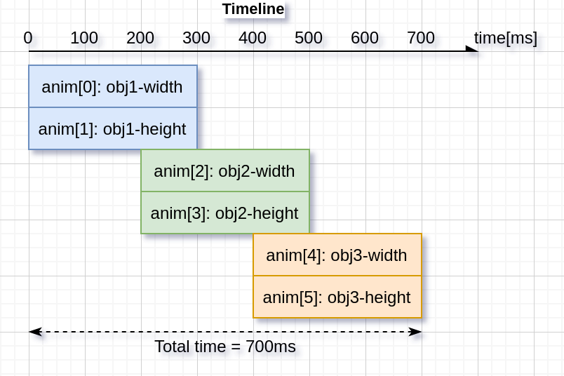

.. include:: /header.rst
:github_url: |github_link_base|/overview/animation.md
Animations
You can automatically change the value of a variable between a start and an end value using animations. Animation will happen by periodically calling an "animator" function with the corresponding value parameter.
The animator functions have the following prototype:
void func(void * var, lv_anim_var_t value);
This prototype is compatible with the majority of the property set functions in LVGL. For example lv_obj_set_x(obj, value) or lv_obj_set_width(obj, value)
Create an animation
To create an animation an lv_anim_t variable has to be initialized and configured with lv_anim_set_...() functions.
/* INITIALIZE AN ANIMATION
*-----------------------*/
lv_anim_t a;
lv_anim_init(&a);
/* MANDATORY SETTINGS
*------------------*/
/*Set the "animator" function*/
lv_anim_set_exec_cb(&a, (lv_anim_exec_xcb_t) lv_obj_set_x);
/*Set target of the animation*/
lv_anim_set_var(&a, obj);
/*Length of the animation [ms]*/
lv_anim_set_time(&a, duration);
/*Set start and end values. E.g. 0, 150*/
lv_anim_set_values(&a, start, end);
/* OPTIONAL SETTINGS
*------------------*/
/*Time to wait before starting the animation [ms]*/
lv_anim_set_delay(&a, delay);
/*Set path (curve). Default is linear*/
lv_anim_set_path(&a, lv_anim_path_ease_in);
/*Set a callback to indicate when the animation is ready (idle).*/
lv_anim_set_ready_cb(&a, ready_cb);
/*Set a callback to indicate when the animation is started (after delay).*/
lv_anim_set_start_cb(&a, start_cb);
/*When ready, play the animation backward with this duration. Default is 0 (disabled) [ms]*/
lv_anim_set_playback_time(&a, time);
/*Delay before playback. Default is 0 (disabled) [ms]*/
lv_anim_set_playback_delay(&a, delay);
/*Number of repetitions. Default is 1. LV_ANIM_REPEAT_INFINITE for infinite repetition*/
lv_anim_set_repeat_count(&a, cnt);
/*Delay before repeat. Default is 0 (disabled) [ms]*/
lv_anim_set_repeat_delay(&a, delay);
/*true (default): apply the start value immediately, false: apply start value after delay when the anim. really starts. */
lv_anim_set_early_apply(&a, true/false);
/* START THE ANIMATION
*------------------*/
lv_anim_start(&a); /*Start the animation*/
You can apply multiple different animations on the same variable at the same time.
For example, animate the x and y coordinates with lv_obj_set_x and lv_obj_set_y. However, only one animation can exist with a given variable and function pair and lv_anim_start() will remove any existing animations for such a pair.
Animation path
You can control the path of an animation. The most simple case is linear, meaning the current value between start and end is changed with fixed steps. A path is a function which calculates the next value to set based on the current state of the animation. Currently, there are the following built-in path functions:
lv_anim_path_linearlinear animationlv_anim_path_stepchange in one step at the endlv_anim_path_ease_inslow at the beginninglv_anim_path_ease_outslow at the endlv_anim_path_ease_in_outslow at the beginning and endlv_anim_path_overshootovershoot the end valuelv_anim_path_bouncebounce back a little from the end value (like hitting a wall)
Speed vs time
By default, you set the animation time directly. But in some cases, setting the animation speed is more practical.
The lv_anim_speed_to_time(speed, start, end) function calculates the required time in milliseconds to reach the end value from a start value with the given speed.
The speed is interpreted in unit/sec dimension. For example, lv_anim_speed_to_time(20,0,100) will yield 5000 milliseconds. For example, in the case of lv_obj_set_x unit is pixels so 20 means 20 px/sec speed.
Delete animations
You can delete an animation with lv_anim_del(var, func) if you provide the animated variable and its animator function.
Timeline
A timeline is a collection of multiple animations which makes it easy to create complex composite animations.
Firstly, create an animation element but don’t call lv_anim_start().
Secondly, create an animation timeline object by calling lv_anim_timeline_create().
Thirdly, add animation elements to the animation timeline by calling lv_anim_timeline_add(at, start_time, &a). start_time is the start time of the animation on the timeline. Note that start_time will override the value of delay.
Finally, call lv_anim_timeline_start(at) to start the animation timeline.
It supports forward and backward playback of the entire animation group, using lv_anim_timeline_set_reverse(at, reverse).
Call lv_anim_timeline_stop(at) to stop the animation timeline.
Call lv_anim_timeline_set_progress(at, progress) function to set the state of the object corresponding to the progress of the timeline.
Call lv_anim_timeline_get_playtime(at) function to get the total duration of the entire animation timeline.
Call lv_anim_timeline_get_reverse(at) function to get whether to reverse the animation timeline.
Call lv_anim_timeline_del(at) function to delete the animation timeline.

Examples
.. include:: ../../examples/anim/index.rst
API
.. doxygenfile:: lv_anim.h
:project: lvgl